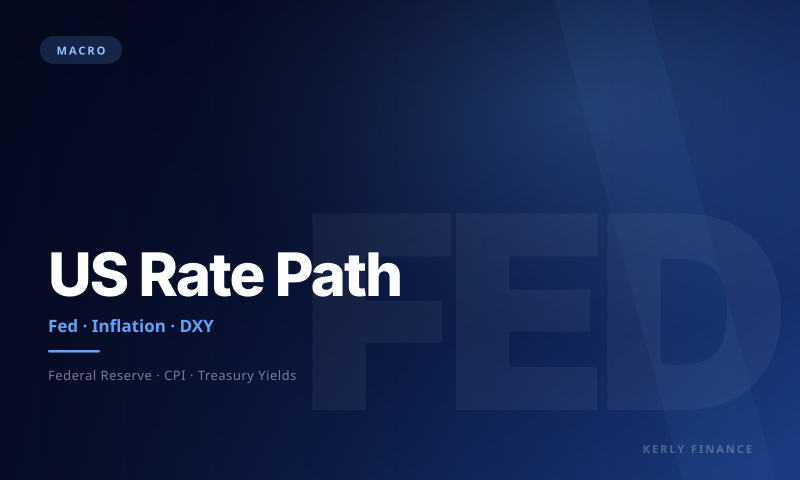
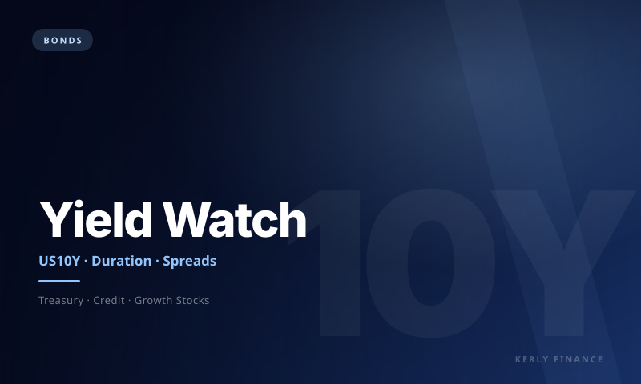
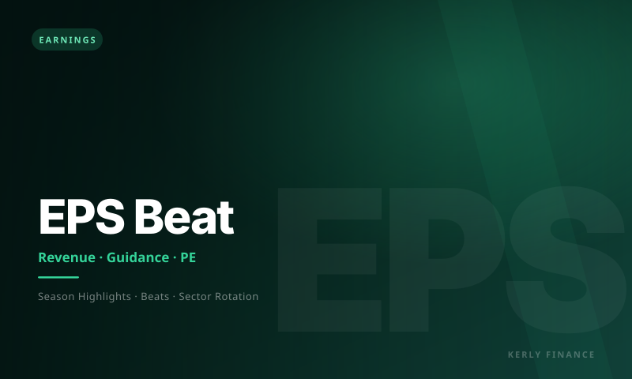
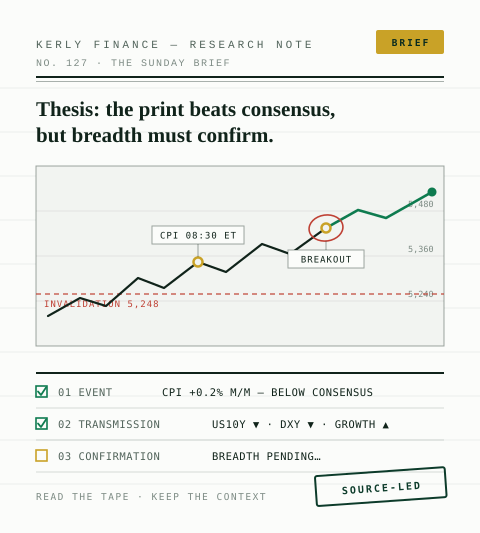

Macro
US inflation data and the Fed: how it moves markets
A framework for reading CPI, FOMC expectations, bond yields, the dollar, gold, growth stocks, and crypto — all in one place.
Kerly Finance distills macro data, central-bank policy, earnings, crypto flows, forex, bonds, and commodities into clear briefs for reading market direction.
Breadth improving · yields stable · crypto flows positive
Featured
Hand-picked analysis from the Kerly research desk: what the catalyst is, which assets are sensitive, and how to read it.

Macro
A framework for reading CPI, FOMC expectations, bond yields, the dollar, gold, growth stocks, and crypto — all in one place.

Equities
Telling healthy profit growth from euphoria while tech leads global indices.

Strategy
A practical framework for tracking DXY, US10Y, gold, oil, crypto, breadth, and rotation.
Browse by topic
Pick a research theme to build a complete market view — from macro catalysts to asset positioning.
Latest posts

Forex
DXY, yields, capital flows, and risk assets often move in the same chain. Here's how to read it.

Bonds
Higher yields change the discount rate, valuations, sector rotation, and risk appetite.

Commodities
Gold isn't only a fear trade. Real yields, the dollar, inflation, and liquidity all matter.

Crypto
ETF flows, futures basis, funding rates, and dominance map the quality of a crypto rally.

Earnings
Revenue, margins, and guidance often matter more than the headline EPS print.
Strategy
A framework for sorting setups, catalysts, technical levels, liquidity, and risk.

About Kerly Finance
Kerly Finance is a reading room for investors and traders who want to understand the big story before it turns into price. Every brief follows an editorial structure: the thesis, the data to check, the sensitive assets, the risks, and the scenarios that follow.
Newsletter
One premium email with the macro calendar, stock catalysts, crypto flows, commodities, and the risk-on/risk-off scenarios for the week ahead.
No spam. No hype. Just market signals worth reading.